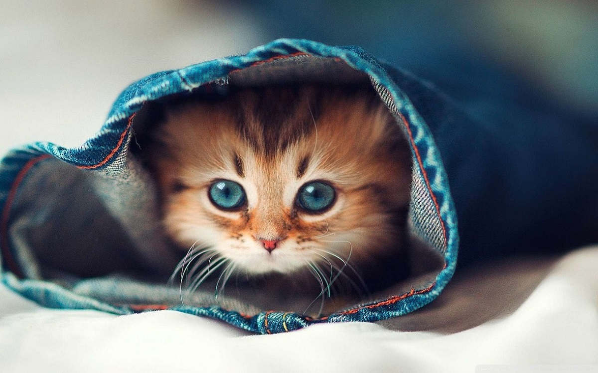

Raising Well Adjusted Cats
neeraj
There are two kinds of cats. Those that are lovingly handled and socialized from birth, and those that aren’t. This story is about socializing cats and kittens. Kittens that are handled daily from birth, introduced to different situations, environments, animals, and people tend to be outgoing. This makes a well adjusted, curious, and playful cat. In contrast, feral cats and kittens that aren’t socialized or exposed to many sights, sounds, and settings are often reserved, shy, and fearful. They may even become aggressive in stressful or frightening situations.
Dogs and cats become very anxious and despondent when living in shelters. They are in unfamiliar surroundings, in cages or runs, with other crying animals. Life in a shelter is a dismal, depressing existence. After months in the shelter, Houdini was depressed and stressed-out. His only way of expressing his fear was to lash out at me. Houdini needed understanding, security, and love. He would be a challenge, but I also knew he would be a lot of fun and learn to love us. This takes us back to the differences between cats who are loved, fondled, socialized, and exposed and those who aren’t.
For more info visit bustersvision